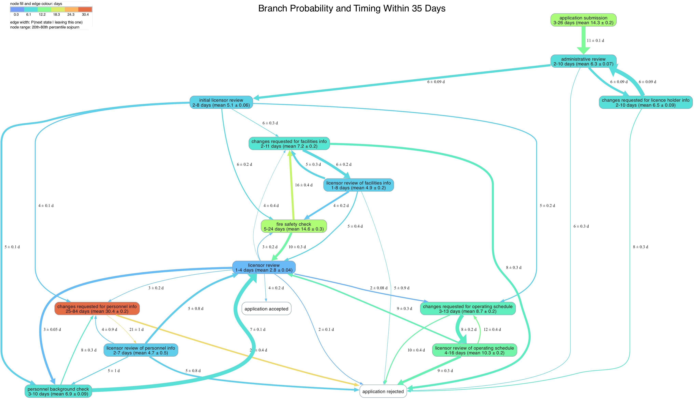
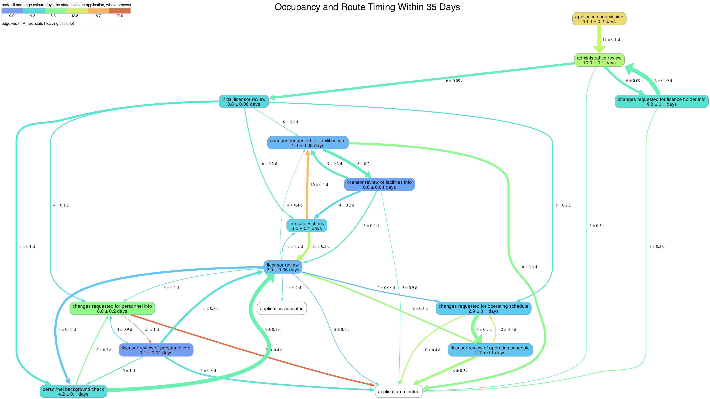
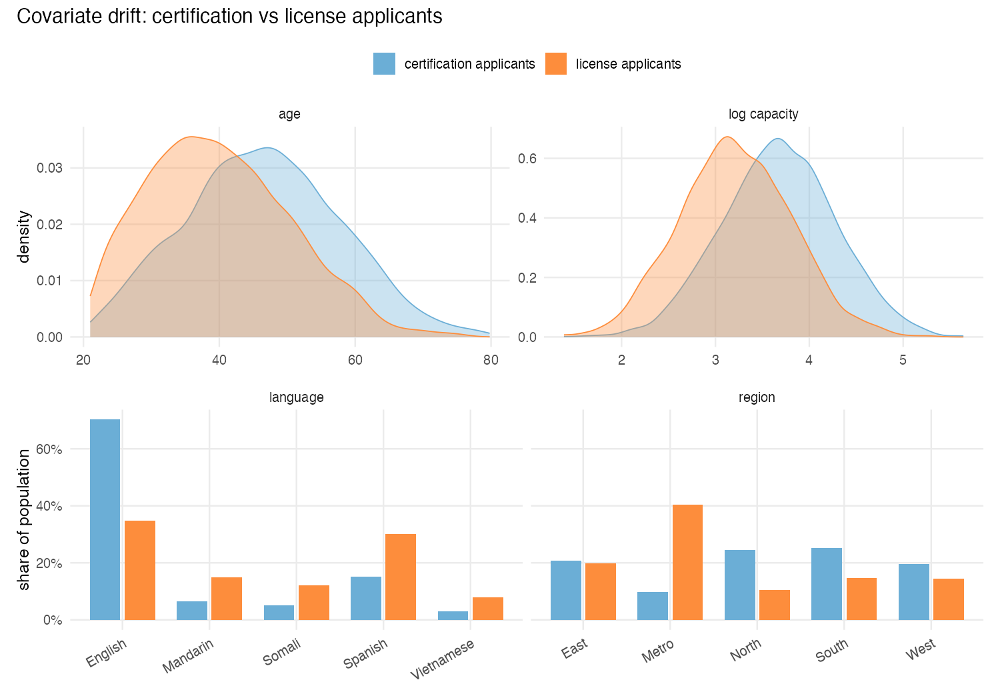
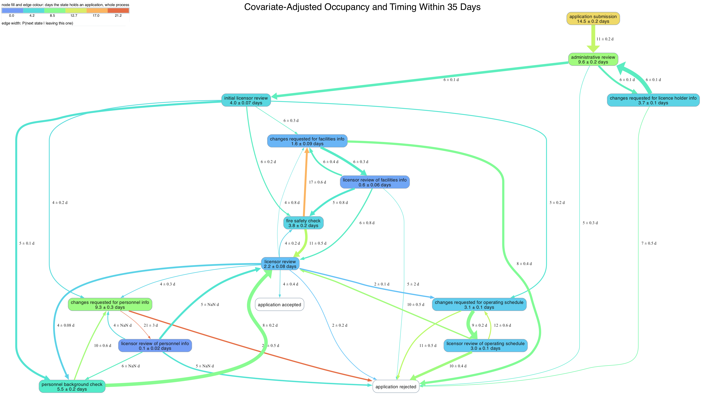

When I worked at the MN Department of Human services, part of my job was investigating why it was taking so long for childcare providers to get licensed. It can be quite a long and winding road to licensure, and it wasn’t immediately clear which of the many steps involved was a bottleneck.
With a little data engineering, I found myself looking at tables like the following:
| date | state | applicant_id |
|---|---|---|
| 2024-06-24 | application submission | 263 |
| 2024-06-30 | administrative review | 19 |
| 2024-07-06 | changes requested for licence holder info | 32 |
| 2024-08-06 | fire safety check | 6 |
From this timing data, I started out by creating maps of transition times between states. Note that the data visualized here is entirely made-up.

Average Transition Times
Finding the average transition time \(E[T]\) between states isn’t quite as easy as you’d think. You can’t just take the empirical average of observed transition times because you might still have transitions in progress (known as right censored observations). Indeed, those transitions still in progress are the very ones most likely to take a long time, so if you dropped them, you’d be biasing your estimate downwards.
Instead, we need to estimate the survival function \(S(t) = P(T > t)\). You can use this to get the average transition time:
\[E[T \land \tau] = E\int_0^\tau1_{t \leq T} \, dt = \int_0^\tau S(t) \, dt\]
To find \(P(T > t)\), note that this is just the probability we don’t transition at any intermediate point \(s\). If \(Y_s\) is the number of applications in progress we observe at time \(s\) and \(d_s\) is the number of applications we observed transitioning at time \(s\), then the probability of a transition at time \(s\) given no previous transitions is approximately \(d_s / Y_S\). This gives us the Kaplan Meier estimator:
\[\hat{S}(t) = \prod_{s \leq t}(1 - d_s/Y_s)\]
The estimator isn’t perfect, however. In particular, if \(\hat{S}(T) \neq 0\) at last observed time \(T\), this would estimate \(E[T] = \infty\). This is why we always find \(E[T \land \tau]\) for some \(\tau < \infty\).
Transition Probabilities
The same right-censoring problem plagues estimates of transition probability. If the transition from state \(A\) to state \(B\) tends to take longer on average, we’ll be more likely to see fewer of those transitions if we just drop in-progress transitions from the dataset. So instead of estimating transition probabilities \(P(D=i)\) directly, we estimate the cumulative incidence function \(F_i(t) = P(D=i, T \leq t)\).
This is just the sum over all times \(s \leq t\) of \(P(D=i, T = s)\). This occurs when we haven’t transitioned by the time immediately prior to \(s\) (probability approximately \(\hat{S}(s^-)\)), then make the transition at \(s\) to state \(i\) (conditional probability approximately \(\frac{d_{i,s}}{Y_s}\)). Putting this all together yields the Aalen-Johansen estimator:
\[\hat{F}_i(t) = \sum_{s \leq t} \hat{S}(s^-) \frac{d_{i,s}}{Y_s}\]
Conditional timing
Once we have estimates of the cumulative incidence function, we can use them to estimate the conditional transition times for each branch.
\[ \begin{aligned} E[\tau - T | D=i, T\le\tau] &= \frac{E[(\tau - T)1_{D=i, T\le\tau}]}{P(D=i, T\le\tau)} \\ &= \frac{1}{P(D=i, T\le\tau)} \int_0^\tau P(\tau - T \geq u , D=i)du \\ &= \frac{1}{P(D=i, T\le\tau)} \int_0^\tau F_i(\tau - u) du \\ E[T | D=i, T \leq \tau] &= \tau - \frac{1}{P(D=i, T\le\tau)} \int_0^\tau F_i(u) du \end{aligned} \]
Altogether, this shows how every statistic in the state map above comes from the Kaplan Meier survival function estimator.
Occupancy
My original map showed average transition times. But even terribly slow states wouldn’t really be a bottleneck if few applicants entered them. Our real concern isn’t transition time alone, but occupancy: the average days a state holds an application over its whole trajectory. For my second take on the state maps, I plotted occupancy estimates instead. We can estimate this with \(E[T_i \land \tau]\left(\frac{N_i}{N}\right)\) where \(N_i\) sums state entrances and \(N\) counts applications. As we’re taking the \(\tau\)-restricted mean, this gives a lower bound per visit.

The factorization into a visit rate times a restricted mean sojourn is pleasant to look at and awful to put an error bar on. The two pieces live on different units — one is a mean over applications, the other a mean over sojourn rows — they’re plainly dependent, since an applicant who lingers in a state is also the sort who loops back to it, and the number of rows is itself random. I’ll come back to this below, because the fix turns out to be the same trick that handles covariates.
Generalizing to the Full Population
The timing data I had access to was technically only for applicants of “certification”, not full licensure. Theoretically, the steps required for certification were a subset of those for licensure, so all other things being equal, bottlenecks in certification were likely to be bottlenecks in licensure too. But all other things were not equal: certification applicants had demonstrably different demographics than license applicants, which could easily have influenced their survival curves.

To account for this discrepancy, I decided to condition the occupancy estimates by covariates, then average my predictions across true joint covariate distribution for both certification and license applicants.
Conditional Versions of the Estimators
This is where things could have gotten ugly. Every quantity on the map is a functional of a censored curve, and the obvious way to condition on covariates is to fit a second model of the process — a Cox model per transition, say — and then push the predictions back through all the integrals above. That’s a lot of machinery, and the delta method for the resulting standard errors is a small research project of its own.
The trick I used instead comes from Andersen and Perme (2010): get rid of the censoring first, then regress. For each applicant, compute the jackknife pseudo-value
\[\tilde\theta_m = n\hat\theta - (n-1)\hat\theta_{(-m)},\]
where \(\hat\theta\) is whichever functional I care about — restricted mean, branch probability, conditional timing — and \(\hat\theta_{(-m)}\) is the same functional refit with observation \(m\) deleted. The pseudo-values average back to \(\hat\theta\) by construction, and the remarkable part is that they behave, to first order, like uncensored observations of the quantity. A censored row still gets a number, and that number carries the information the row actually contributed to the curve.
Once each applicant has a plain number attached to it, the conditional model is just a regression. I ran OLS of the pseudo-values on language, age, log requested capacity and region, and then standardized: multiply the coefficients by the covariate means of the target population rather than the fitted one.
For the standard errors, OLS’s usual \(\sigma^2(X'X)^{-1}\) is wrong twice over. Pseudo-values are badly heteroskedastic by construction — a branch indicator’s residual variance tracks \(p(1-p)\), and a restricted mean’s grows with the follow-up left — and they aren’t independent across subjects, being leave-one-out perturbations of one shared fit. Andersen and Perme handle this by fitting a GEE with an independence working correlation, which with one time point per subject is exactly lm plus a robust sandwich. I used HC1 clustered on applicant id: an applicant can loop through a state a couple dozen times, and summing the meat over rows instead of over applicants would drop the within-applicant cross terms and understate every interval. Jacobsen and Martinussen (2016) point out that this sandwich slightly overestimates the asymptotic variance, since the second-order dependence among pseudo-values reads as extra noise; there’s a correction term, and I decided it wasn’t worth the code.
Occupancy Pseudo-Values
Occupancy needed one extra thought. It’s what a state costs an application over its entire passage, rework loops included, which means its sampling unit is the application, not the sojourn. Applications that never visit the state at all contribute a real zero and have to be kept — drop them and you’ve silently started estimating days per visitor, a different and larger number.
So when I take the jackknife for occupancy, I leave out one entire application’s trajectory rather than one sojourn row. And here the arithmetic is kind: because an influence function is a derivative in the case weights, and derivatives add across sums, giving an application weight \(1+\varepsilon\) gives each of its rows that weight too. The pseudo-value for an application’s occupancy is just the sum of the restricted-mean pseudo-values of its constituent sojourns.
pv <- as.numeric(pseudo(km, times = tau, type = "rmst")) # one per sojourn row
o <- numeric(n) # one per application
agg <- rowsum(pv, match(d$id, ids))
o[as.integer(rownames(agg))] <- agg # non-visitors stay 0
occupancy <- mean(o)
se <- sd(o) / sqrt(n)That’s the estimator and its standard error, in six lines, with no delta method and no covariance term anywhere. It isn’t a shortcut: summing to the application before squaring is precisely the grouped jackknife, so the within-application cross terms are inside \(o_i^2\) for free, and the result is identical to the cluster-robust delta method applied to the visit-rate-times-sojourn factorization. An applicant who lingers once and tends to linger again on the way back widens the interval, as it should. The point estimate comes out right too, since the pseudo-values average to the restricted mean and there are \(K_i\) of them for applicant \(i\).
The nice consequence is that occupancy stops being special. It’s one number per application on the application’s own unit, so the covariate model is the same ordinary regression as everything else — and covariates that make an application come back more often and covariates that make each stay longer are both already inside \(o_i\), so the visit rate needs no separate model.
Handling Missingness
The covariates themselves had holes in them. To get around this, I sampled 50 imputations with mice, using multinomial logistic regression for the categorical columns and conditioning on the pseudo-value.
I found that the default of ten imputations wasn’t enough: my branch probabilities and timings wandered by 11–15% of their own standard deviation just from changing the imputation seed. But at 50, everything sat inside a tenth of an SD. Each imputation gets the full downstream analysis — regress, standardize, done — and then the results combine by Rubin’s rules, so the reported uncertainty is within-imputation sampling error and between-imputation spread rather than only the latter: \[ \text{Var}[Q] \approx E[\text{Var}[Q | X_\text{missing}]] + (1 + \frac{1}{m})\hat{\text{Var}}[E[Q | X_\text{missing}]] \]
One subtlety I nearly missed: I ran mice separately for the two populations. The certification applicants are the rows the regressions are fitted on, and they carry process data; the license applicants have no event log at all and enter only through the covariate mean I average the fitted values over. Imputing them together would have filled a systematically missing column in one population from the other, and then conditioned on the result.
